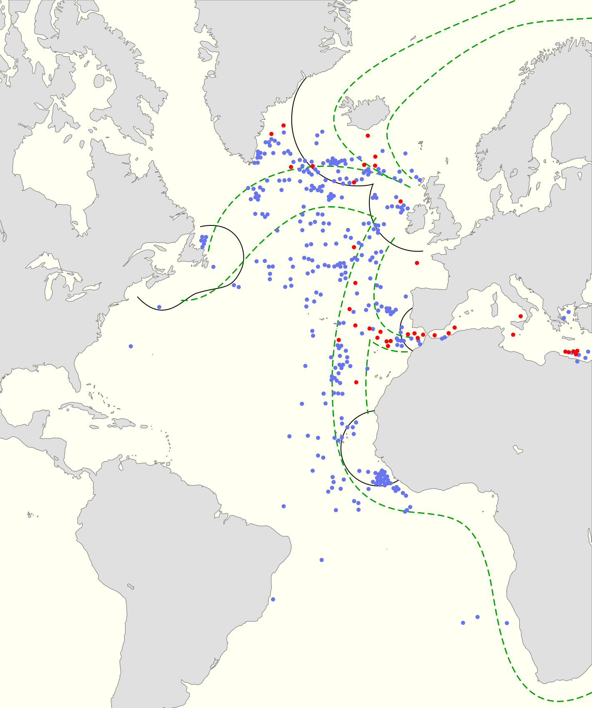

Batalla del Atlántico
La campaña más larga de la guerra: la lucha por las rutas marítimas del Atlántico entre los submarinos alemanes y los convoyes que mantenían con vida al Reino Unido.
Datos
| Fechas | 3 de septiembre de 1939 – 8 de mayo de 1945 (toda la guerra) |
|---|---|
| Lugar | Océano Atlántico y sus rutas de convoyes |
| Resultado | Victoria aliada; las rutas marítimas quedan aseguradas |
| Bando atacante | Alemania (Kriegsmarine, flota de submarinos) e Italia |
| Defensores | Reino Unido, Canadá, Estados Unidos y sus aliados |
| Comandantes | Karl Dönitz (Alemania); Max Horton (Reino Unido) |
| Clave | La "guerra del tonelaje": hundir barcos más rápido de lo que los aliados podían construirlos |
Bando atacante
U-Boote
Submarinos
Defensores
Introducción
El Reino Unido, una isla, dependía por completo de los barcos que le traían alimentos, combustible, materias primas y tropas a través del Atlántico. Alemania intentó estrangular esa línea de vida con su flota de submarinos (U-Boote). La batalla se libró de forma continua durante toda la guerra y su resultado condicionó todos los demás frentes.
Winston Churchill escribió que fue la única cosa que de verdad le dio miedo durante la guerra: si se cortaban las rutas del Atlántico, el Reino Unido quedaría fuera del conflicto.
Razones
- Estrangular al Reino Unido: sin importaciones, las islas británicas no podían resistir ni servir de base para liberar Europa.
- Guerra del tonelaje: Dönitz calculaba que, si hundía mercantes a un ritmo mayor que su construcción, la economía británica colapsaría.
- Impedir la acumulación estadounidense: cortar el Atlántico frenaría el envío de tropas y material de EE. UU. hacia Europa.
Cuerpo (desarrollo)
Los alemanes agruparon sus submarinos en "manadas de lobos" (Rudeltaktik) que atacaban de noche y en superficie a los convoyes. En los periodos más duros (los "tiempos felices" para los U-Boote), los aliados perdieron enormes cantidades de barcos y tripulaciones.
La marea cambió gracias a una combinación de factores: el sistema de convoyes escoltados, el radar y el sónar, los aviones de patrulla de largo alcance que cerraron la "brecha aérea" del Atlántico medio, los portaaviones de escolta y, de forma decisiva, el descifrado de los mensajes de la máquina Enigma en Bletchley Park, que permitía desviar los convoyes de las manadas de lobos. Hacia mayo de 1943, las pérdidas de submarinos se hicieron insostenibles para Alemania.

Mapa de la Batalla del Atlántico (Wikimedia Commons): rutas de convoyes y zonas de peligro. Leyenda original en inglés.
Conclusión
La victoria aliada en el Atlántico fue la condición previa de todo lo demás: sin ella no habría sido posible ni sostener al Reino Unido, ni acumular fuerzas para Overlord.
- Alemania perdió la mayoría de sus submarinos y a decenas de miles de tripulantes.
- La producción industrial aliada (sobre todo los "barcos Liberty" estadounidenses) acabó reponiendo barcos más rápido de lo que se hundían.
- La inteligencia (Ultra) demostró ser un arma decisiva.
Curiosidades
- Los "barcos Liberty": Estados Unidos llegó a construir un mercante en pocos días, superando con creces el ritmo de hundimientos.
- La captura de un Enigma: la incautación de máquinas y libros de claves de submarinos alemanes fue vital para el descifrado.
- La brecha del Atlántico medio: una zona central sin cobertura aérea donde los convoyes eran más vulnerables, cerrada al fin con aviones de muy largo alcance.
Teorías
Debates e interpretaciones historiográficas, presentados como tales:
- ¿Estuvo cerca Alemania de ganar? Se debate si los submarinos llegaron realmente a poner al Reino Unido al borde del colapso, o si la superioridad industrial aliada hacía la derrota alemana inevitable a largo plazo.
- El peso de Ultra: se discute cuánto acortó la batalla el descifrado de Enigma frente a factores como el radar, la aviación o la simple producción de barcos.